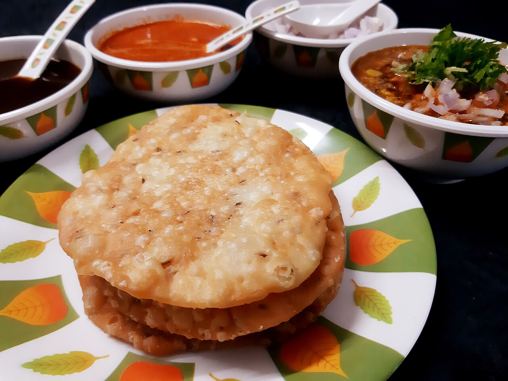

Dal Pakwan
soft chana dal under a shower of chaat masala with crisp fried maida discs to break over it

Contains: gluten
Ingredients
Quantities for 4.
- 1.5 cups (300g) Chana Dal
- 1/2 tsp Turmeric
- 2 cups (250g) Maidafor the pakwan
- 2 tbsp Ravakeeps the pakwan crisp for hoursoptional
- 1 tsp Ajwain
- 1 tsp Cumin Seeds
- 1/4 tsp Asafoetida
- 3, chopped Green Chilli
- 2cm piece, julienned Ginger
- 1, chopped Tomatooptional
- 1 tsp Chilli Powder
- 1 tsp Amchur
- 1.5 tsp, for finishing Chaat Masala
- 1/2 tsp Black Saltoptional
- 1 small, finely chopped, to serve Onionoptional
- 3 tbsp, chopped Coriander Leavesoptional
- 1, in wedges Lemonoptional
- 3 tbsp for the dal, 4 tbsp for the pakwan dough, plus 600ml for frying Neutral Oil
- 4 cups for the dal, plus 3/4 cup for the dough Water
- to taste Salt
Cookware
pressure cooker, kadhai, stovetop
Checked against the ingredient list for ten allergens: milk, egg, fish, crustaceans, tree nuts, peanuts, sesame, mustard, soy and gluten. Brands vary, so read the label on anything new to you.
Before you start
- Soak the chana dal 2 hours, or overnight if you are cooking this for breakfast. Drain before cooking.
- Make the pakwan dough first and rest it 30 minutes. Resting is what stops it puffing up like a puri.
- Sindhi dal pakwan is a breakfast dish; both parts can be made the night before and the dal reheated.
Method
- Knead the maida, rava, 1/2 tsp ajwain, 1/2 tsp salt and 4 tbsp oil with about 3/4 cup water into a firm, smooth dough. Cover and rest 30 minutes.
- Pressure cook the drained dal with the turmeric, 1/2 tsp salt and 4 cups water for 2 whistles, then 4 minutes on low. The grains should be soft but still separate, not a puree.Chana dal for pakwan must hold its shape. One whistle too many and you have gravy.
- Heat 3 tbsp oil in a small pan, crackle the remaining cumin and ajwain, add the hing, green chilli and half the ginger.
- Add the tomato, chilli powder and amchur and cook 3 minutes until the oil separates, then pour the whole tempering into the dal.
- Simmer the dal 8-10 minutes, mashing a ladleful against the side to thicken it. It should be spoonable, like loose porridge.
- Divide the dough into 12. Roll each into a thin 12cm disc and prick it all over with a fork, 20 or 30 holes, right through.Every unpricked patch will balloon. Prick more than you think you need.
- Heat the frying oil to medium. A scrap of dough should rise slowly, not race to the top. Fry each pakwan 2-3 minutes a side until pale gold and rigid.Hot oil gives you a puri: puffed, soft, wrong. Medium oil is what makes it snap.
- Drain the pakwan upright in a colander so they stay crisp rather than steaming on kitchen paper.
- Ladle the hot dal into bowls, top with chopped onion, remaining ginger, coriander, chaat masala and black salt, and squeeze over lemon.
- Serve at once with the pakwan alongside, to be cracked and dipped.
Storage
The dal keeps 3 days refrigerated and thickens; reheat with a splash of water. Pakwan keep a week in an airtight tin once completely cool. Any residual warmth and they go soft overnight.
Nutrition Good estimate
High protein: 24 g a serving, 13% of the calories
| Per serving443 g | Per 100 g | |
|---|---|---|
| Calories | 756 kcal | 171 kcal |
| Protein | 24.1 g | 5 g |
| Carbohydrate | 107.5 g | 24 g |
| of which sugars | 11.0 g | 2 g |
| Fibre | 13.4 g | 3 g |
| Fat | 26.7 g | 6 g |
| of which saturated | 2.8 g | 1 g |
| of which unsaturated | 21.5 g | 5 g |
Nearest database match used for amchur, asafoetida, black salt, chaat masala. Estimated from raw ingredients using USDA FoodData Central.
More like this: Vegan Indian recipes · Vegetarian Indian recipes · Dairy-free Indian recipes · Sindhi recipes
Times, yields, allergens and nutrition are guidance. Use your own judgement on doneness and on storing. More in About.